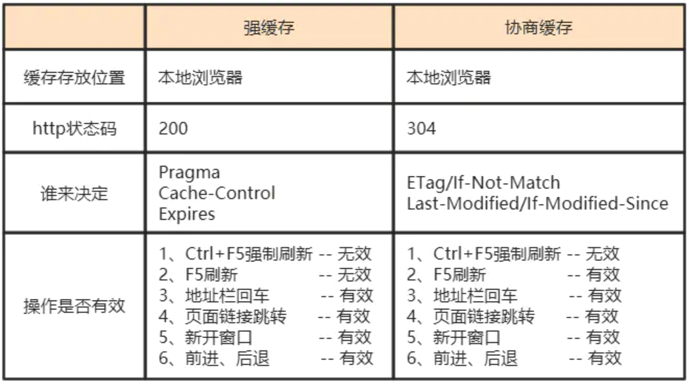

一、前言
当客户端向服务器请求资源时，会先抵达浏览器缓存，如果浏览器中有要请求资源的副本，就可以直接从浏览器缓存中提取，而不是向原始服务器请求这个资源。
常见的 HTTP 缓存只能缓存 GET 请求响应的资源，对其他类型的响应无能为力，因此后续说的请求缓存指的都是 GET 请求。
HTTP 缓存都是从第二次请求开始的。第一次请求资源时，服务器返回资源，并在 response header 中回传资源的缓存参数。第二次请求时，浏览器判断这些请求参数，命中强缓存则直接返回 200；否则把请求参数添加到 request header 中传给服务器，看是否命中协商缓存，命中则返回 304；否则服务器就会返回新的资源。
二、HTTP 缓存的分类
根据是否需要重新向服务器发起请求进行分类， 可分为：强缓存、协商缓存。
根据式被单个用户室友还是多个用户使用进行分类，可分为：私有缓存、共享缓存。
强缓存如果生效，则不再需要再和服务器进行交互。协商缓存无论是否生效，都需要与服务器进行交互。
2.1 强缓存
强缓存在缓存数据未失效的情况下，会直接使用浏览器的缓存数据，不会再向服务器发送任何请求。强缓存生效时，HTTP 状态码为 200。这种方式页面的加载速度是最快的，性能也是很好的，但是在这期间，如果服务端的资源修改了，浏览器是拿不到的，因为它不会再向服务器发送请求了。这种情况在我们的开发中经常遇到，因为走的是强缓存，所以一般 Ctrl+F5 一顿操作之后就好了。
与强缓存相关的 header 头有：Pragma、Cache-Control、Expires。
① Pragma
Pragma 是 HTTP/1.1 之前版本的历史遗留字段，仅作为与 HTTP/1.0 的向后兼容而定义。规范定义的形式唯一，如下所示。
1 | Pragma: no-cache |
该首部字段属于通用首部字段，但只用在客户端发送的请求中。客户端会要求所有的中间服务器不返回缓存的资源。
所有的中间服务器如果都能以 HTTP/1.1 为基准，那直接采用 Cache-Control: no-cache 指定缓存的处理方式是最为理想的。但要整体掌握全部中间服务器使用的 HTTP 协议版本却是不现实的。因此，发送的请求会同时含有下面两个首部字段：
1 | Cache-Control: no-cache |
② Cache-control
Cache-control 为通用首部字段，通过指定 Cache-control 的指令，就能操作缓存的工作机制。指令的参数是可选的，多个请求之间通过 “,” 分割。Cache-control 的指令可用于请求时及响应时。例如：
1 | Cache-control: private, max-age=0, no-cache |
Cache-control 常用指令：
public：表明其他用户也可以利用缓存。
private：缓存服务器只对特定用户提供资源缓存的服务，对于其他用户发送过来的请求，代理服务器则不会返回缓存。no-cache：客户端不会接收缓存过的响应，强制向源服务器再次验证。no-store：不能缓存请求或响应的任何内容。max-age=xxx[秒]：缓存内容将在 xxx 秒后失效。应用 HTTP/1.1 版本的缓存服务器，在同时遇到 max-age 指令和 Expires 首部字段时，会优先处理 max-age 指令，而忽略 Expires。而 HTTP/1.0 版本的缓存服务器的情况则相反，max-age 指令会被忽略。
③ Expires
1 | Expires: Wed, 04 Jul 2021 08:26:05 GMT |
首部字段 Expires 会将资源失效的日期告知客户端。缓存服务器在接收到含有首部字段 Expires 的响应后，会以缓存来应答请求，在 Expires 字段值指定的时间之前，响应的副本会一直被保存。当超过指定的时间后，缓存服务器在请求发过来时，会转向源服务器请求资源。
源服务器不希望缓存服务器对资源缓存时，最好在 Expires 字段内写入与首部字段 Date 相同的值。
Expires 存在的问题：服务器与客户端的时间不一致会出现问题。
到了 HTTP/1.1，Expires 已经被 Cache-Control 替代，原因在于 Expires 控制缓存的原理是使用客户端的时间与服务端返回的时间做对比，如果客户端与服务端的时间由于某些原因（时区不同、客户端和服务端有一方的时间不准确）发生误差，强制缓存就会直接失效，那么强制缓存的存在就毫无意义。
2.2 协商缓存
当第一次请求时，服务器返回的响应头中 (1)没有 Cache-Control 和 Expires 或 (2)Cache-Control 的设置为 no-cache 或 (3)Cache-Control 和 Expires 过期了，那么浏览器第二次请求时就会与服务器进行协商，与服务器对比判断资源是否进行了修改更新。如果服务器的资源没有修改，那么就会返回 304 状态码。告诉浏览器可以使用缓存中的数据，这样就减少了服务器数据传输的压力。如果数据有更新，就会返回 200 状态码，服务器就会返回更新后的资源，并将缓存信息一起返回。
与协商缓存相关的 header 头有：ETag/If-None-Match 、Last-Modified/If-Modified-Since，请求头和响应头需要成对出现。
① ETag
ETag 能告知客户端实体标记。它是一种可将资源以字符串形式做唯一性标识的方式。服务器会为每份资源分配对应的 ETag 值。
1 | ETag: “5b2a6fb4-3166” |
当资源更新时，ETag 值也需要更新。生成 ETag 值并没有统一的算法规则，而仅仅是由服务器来分配。
资源被缓存时，就会分配唯一性标识。例如，当使用中文版浏览器访问谷歌时，就会返回中文版对应的资源，而使用英文版的浏览器访问时，就会返回英文版对应的资源。两者的 URL 是相同的，所以仅凭 URI 指定缓存的资源是相当困难的。若在下载过程中出现中断、再连接的情况，都会依照 ETag 值来指定资源。
ETag 中有强 ETag 值和弱 ETag 值之分：
- 强 ETag：无论实体发生多么细微的变换都会改变其值。
- 弱 ETag：只用于提示资源是否相同，只有资源发生了根本改变，ETag 值才会改变。这时会在字段最开始处附加 W/。
② If-None-Match
服务器会比对 If-None-Match 的字段值和资源的 Etag 值，若不一致，则服务器处理该请求。
③ Last-Modified
Last-Modified 指定资源最终修改的时间。
1 | Last-Modified: Wed, 04 Jul 2021 08:26:05 GMT |
④ If-Modified-Since
若资源在 If-Modified-Since 指定的时间之后更新过，则服务器处理该请求。否则服务器返回 304 状态码。
If-Modified-Since 用于确认代理或客户端拥有的本地资源的有效性。获取资源的更新日期时间，可以通过首部字段 Last-Modified 来确定。
ETag/If-Not-Match 是在 HTTP/1.1 出现的，主要是解决以下问题：
- Last-Modified 标注的最后修改时间只能精确到秒级，如果某些文件在 1 秒钟以内，被修改多次的话，它将不能准确标注文件的修改时间。
- 如果某些文件被修改了，但是内容并没有任何变化，而 Last-Modified 却改变了，导致文件没法使用缓存。
- 有可能存在服务器没有准确获取文件修改时间，或者与代理服务器时间不一致等情形。
2.3 私有缓存（浏览器级缓存）
私有缓存只能用于特定的用户：Cache-Control: Private
2.4 共享缓存（代理级缓存）
共享缓存可以被多个用户使用：Cache-Control: Public
三、HTTP 缓存的有点
- 减缓了服务器的压力，提高了网站的性能
- 加快了客户端加载网页的速度
- 减少了冗余的数据传输，节省了网费，降低了网络拥塞

Litchi
怕什么真理无穷，进一寸有一寸的欢喜